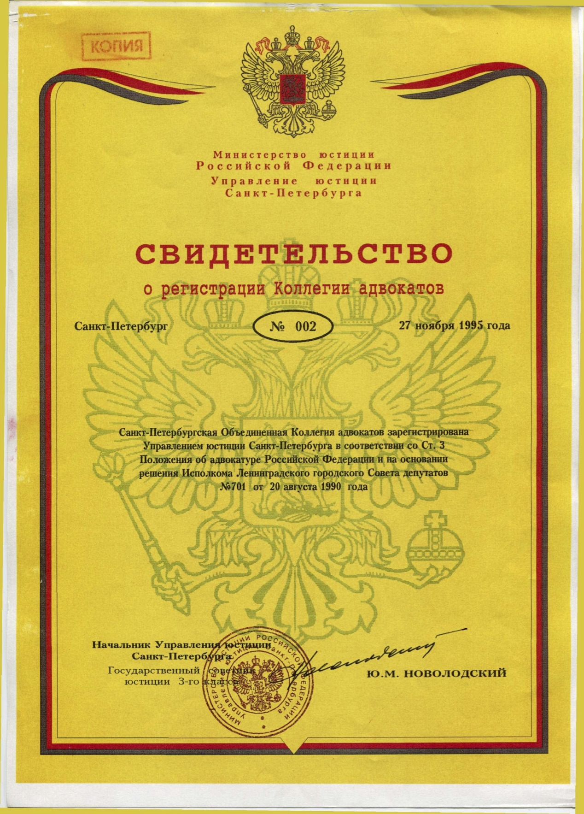
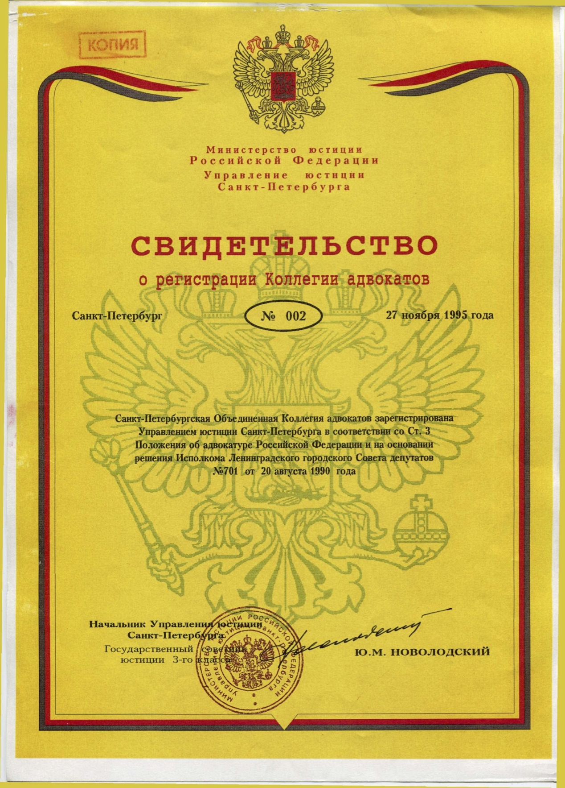

St. Petersburg United Bar Association
 

On the bar association
On 8 April 1990, forty practicing lawyers in Leningrad and the Leningrad Region founded,
pursuant to Article 3 of the Law of the USSR "On Advocacy in the USSR", the Leningrad United Bar
Association as a voluntary inter-territorial association of legal professionals practicing in
protecting the rights of citizens, the legal interests of organisations, and in legal
representation. The Bar Association was the first alternative (concurrent) circle of legal
professionals in the Soviet Union.
On 20 August of the same year, the Bar Association was registered with and approved by decision of the executive committee of the Leningrad Municipal Council of People's Deputies (decision No. 701). Yu.A. Ilyin was elected Chairman of the Bar.
In September 1991, the name of the city of Leningrad was restored its historical one – St. Petersburg – and the Bar Association was renamed to the St. Petersburg United Bar Association.
Presently, the Bar Association members are 390 legal professionals, including five Doc. Legal Sci., four PhDs in legal sciences, eight instructors at higher education establishments, one Honoured Lawyer of Russia, sixty-two Honorary Attorneys at Law of Russia, and fourteen Honoured members of the Bar Association. One person was awarded the Plevako Gold Medal; another one, the Plevako silver Medal; fifty-two persons were awarded the Silver Badge of the Bar Association. One lawyer of the Bar Association is member of the International Bar Association.
The Bar Association was originally created as a union of lawyers from different Russian regions, including remote ones. That is the reason why it bears the name "United".
Presently, the Bar Association includes sixty-three law offices (branches) in the constituent entities of the Federation (regions). Bar associations are present in the following cities and towns: Archangel, Babaevo, Yekaterinburg, Kazan, Kaluga, Kandalaksha, Krasnodar, Moscow and the Moscow Region, Novosibirsk, St. Petersburg and the Leningrad Region (including Luga, Podporozhie, Sestroretsk, and Sosnovyi Bor). From the outset, this helped address clients' problems without delay and resorting to prolonged negotiations with other lawyer unions. The constituent entities of the Russian Federation meet the demand in professional legal services much better by following St. Petersburg standards.
The Bar Association is the founder of the Council of Lawyers of St. Petersburg and the Leningrad Region that revived the traditions of the pre-October 1917 Revolution Council of Attorneys at Law in St. Petersburg.
The Bar Association, based on the principle of unity and collaboration of lawyers, managed to establish business contacts with many Russian unions of lawyers and the international legal community, including lawyers and barristers in Great Britain, Germany, The Netherlands, the USA and Finland.
Special relations have connected the Bar Association with the International Bar Association (IBA) — the most prestigious, esteemed and sizeable organisation of lawyers worldwide.
The Bar Association was among the founders of the Bar Association of Russia, the Federal Union of Lawyers and the Guild of Russian Lawyers, and takes part in the activities of the Federal Chamber of Lawyers of the Russian Federation and the St. Petersburg Advocates' Chamber.
On 20 August of the same year, the Bar Association was registered with and approved by decision of the executive committee of the Leningrad Municipal Council of People's Deputies (decision No. 701). Yu.A. Ilyin was elected Chairman of the Bar.
In September 1991, the name of the city of Leningrad was restored its historical one – St. Petersburg – and the Bar Association was renamed to the St. Petersburg United Bar Association.
Presently, the Bar Association members are 390 legal professionals, including five Doc. Legal Sci., four PhDs in legal sciences, eight instructors at higher education establishments, one Honoured Lawyer of Russia, sixty-two Honorary Attorneys at Law of Russia, and fourteen Honoured members of the Bar Association. One person was awarded the Plevako Gold Medal; another one, the Plevako silver Medal; fifty-two persons were awarded the Silver Badge of the Bar Association. One lawyer of the Bar Association is member of the International Bar Association.
The Bar Association was originally created as a union of lawyers from different Russian regions, including remote ones. That is the reason why it bears the name "United".
Presently, the Bar Association includes sixty-three law offices (branches) in the constituent entities of the Federation (regions). Bar associations are present in the following cities and towns: Archangel, Babaevo, Yekaterinburg, Kazan, Kaluga, Kandalaksha, Krasnodar, Moscow and the Moscow Region, Novosibirsk, St. Petersburg and the Leningrad Region (including Luga, Podporozhie, Sestroretsk, and Sosnovyi Bor). From the outset, this helped address clients' problems without delay and resorting to prolonged negotiations with other lawyer unions. The constituent entities of the Russian Federation meet the demand in professional legal services much better by following St. Petersburg standards.
The Bar Association is the founder of the Council of Lawyers of St. Petersburg and the Leningrad Region that revived the traditions of the pre-October 1917 Revolution Council of Attorneys at Law in St. Petersburg.
The Bar Association, based on the principle of unity and collaboration of lawyers, managed to establish business contacts with many Russian unions of lawyers and the international legal community, including lawyers and barristers in Great Britain, Germany, The Netherlands, the USA and Finland.
Special relations have connected the Bar Association with the International Bar Association (IBA) — the most prestigious, esteemed and sizeable organisation of lawyers worldwide.
The Bar Association was among the founders of the Bar Association of Russia, the Federal Union of Lawyers and the Guild of Russian Lawyers, and takes part in the activities of the Federal Chamber of Lawyers of the Russian Federation and the St. Petersburg Advocates' Chamber.
home page